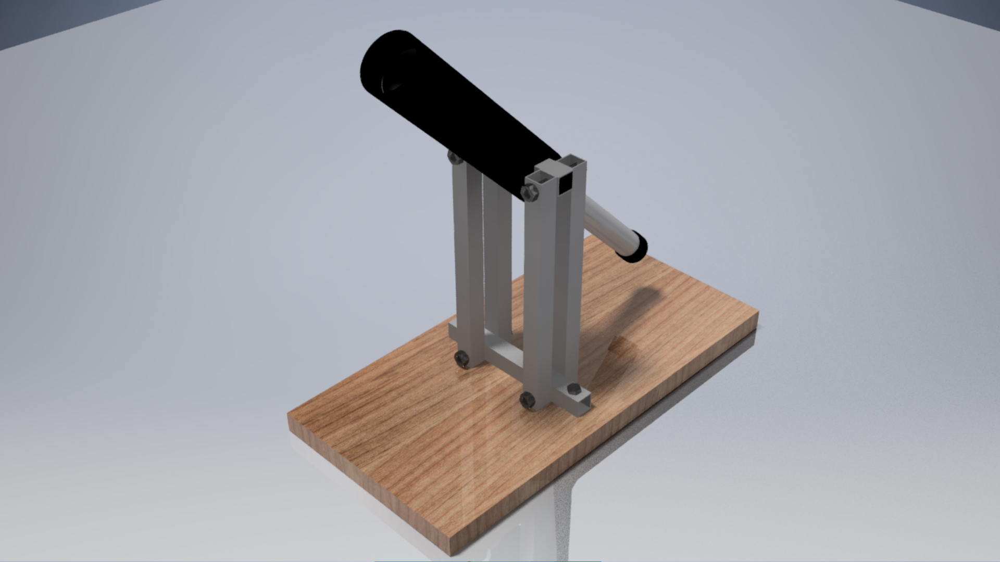
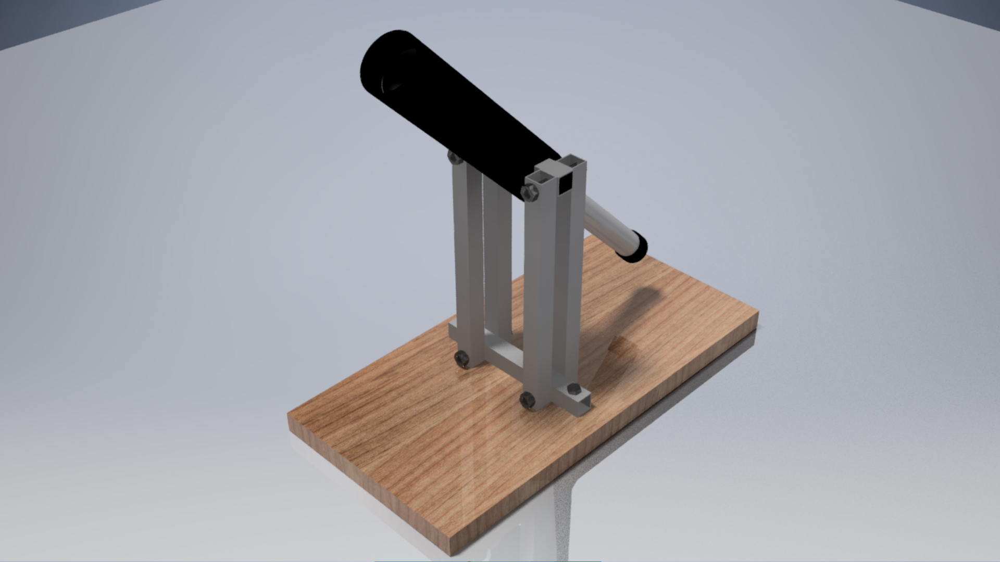

My name is Cameron Stott. Engineering and design have been an interest and passion of mine from a young age, and I have committed much of my personal time and education to pursuing a career in this field. As a person with a very inquisitive and technically oriented mentality, I have always enjoyed designing and working with machinery. To achieve this ambition, I have completed both a HNC (Higher National Certificate) and subsequent HND (Higher National Diploma) in Engineering Systems as well as going on to achieve a Bachelor’s Degree in Mechanical Engineering at Heriot Watt University.
I pride myself on my intuitiveness, eagerness to learn and versatility. I can look at complex problems from a practical as well as logical perspective and develop new and unique ideas, using problem solving and analysis to discover faults, solve problems, and implement improvements to current processes. I can adapt my abilities and perspectives to new tasks and skillsets to learn quickly and further develop myself. In both group settings as well as individually I approach everything with an open mind, enthusiasm, and optimistic attitude.
Due to my experience at both university and in the workplace, I have become far more confident when working with others, comparing ideas and public speaking. I pride myself on being approachable and listening to the concerns and opinions of others, allowing me to excel both in a team environment and independently. I consistently ensure that I learn from previous mistakes and treat them as a learning opportunity going forward rather than a reason to doubt my abilities and lose confidence. I feel that this is a crucial trait to the modern engineer and one that will strengthen not only the wellbeing of individual engineers but the industry as a whole.
I flourish when I am able to apply my technical skills and creativity in engineering practice. I often spend my free time CAD modelling and 3D printing as it allows me to think creatively and problem solve to design a refined final product, such as robotic arms and features, automotive components and modifications for existing products. Through this hobby I have become proficient in numerous CAD modelling software including Autodesk Inventor, AutoCAD, Fusion 360 and Solidworks.
I have particular interests in robotics, renewable energies and the space industry. I hope to explore a career in these fields and broaden my knowledge. I am eager to expand my skills professionally and personally, developing myself as a person and as an engineer.
As an AIT Engineer, I specialize in the assembly, integration, and testing of complex systems to ensure they meet performance and reliability standards. My work involves collaborating with cross-functional teams to troubleshoot issues, optimize processes, and verify system functionality through rigorous testing protocols.
Troubleshooting
Problem-Solving
Continuous Improvement
CAD Proficiency
Cross-Functional Collaboration
Testing Integration
Previous Employment:
Bathgate, West Lothian | April 2022 – June 2024
Renewables Design Engineer (Full-Time Employment)
This position has allowed me to apply my knowledge gained at university in a professional environment. Working in the renewable energies sector, my role is primarily to design retrofit air-source heat pump systems for client’s domestic properties, this included creating accurate floorplans in CAD, calculating room-by-room heat losses based on EPC data and material u-values, as well as sizing radiators to oppose the heat loss and warm the home. I have learned to work maturely in a professional setting, work effectively to strict deadlines and communicate productively with my design team, surveyors and managers.
In this role I have also designed retrofit solar panel and electric vehicle charging point (EVCP) schematics as well as location maps for properties receiving upgrades. While working in conjunction with Scottish Power, I helped to develop a system to automatically calculate initial quotes based on approved pricings and EPC data. This dramatically increased workflow whilst reducing time spent per job and allowed designers to work more efficiently.
Analytical thinking
Time Management
Attention to detail
CAD proficiency
Collaboration
Adaptability
Bathgate, West Lothian | September 2022 – April 2022
Supervisor (Part-Time Employment)
After working as a store colleague and supervisor for over three years, I have matured greatly both individually and professionally. I have been recommended and trusted by my managers to travel to other Screwfix branches and assist them with delivery, warehouse management and staffing shortages thanks to my experience. This has involved travelling the country, working effectively with unfamiliar colleagues, and adapting to new work environments.
Customer Service
Professionalism
Adaptability
Patience
Blackridge, West Lothian | June 2018 - September 2018
This role involved the production and inspection of plastic injection moulded components, safely carrying out tool changes, as well as the set-up, general maintenance and calibration of state-of-the-art Krauss Maffei moulding machines prior to operation. This position also provided me with my first taste of the engineering industry and an insight into how knowledge gained through lectures and formal education is implemented on the factory floor.
Following technical instructions
Attention to detail
Teamwork
Problem solving
Projects
Duration: 1 Year
For my HND dissertation I chose to design and manufacture an exoskeletal arm to significantly increase the lifting capacity of the wearer as well as reduce repetitive strain during manual handling tasks. The arm consisted of an aluminium frame with a supporting 3D-printed ABS structure. An 120mm pneumatic cylinder with a maximum pressure of 10 Bar provides adequate lifting force to the arm whilst allowing for safe and accurate control via the exoskeleton’s on-board microcontroller. Using an Arduino, a simple control system was created using a push button located in the handle as a trigger which would release air into the pneumatic through a solenoid valve, resulting in the arm performing a ‘curl’ to imitate the wearer’s bicep and assist during a lift.
The arm’s design went through several iterations before the final prototype was manufactured, from basic initial sketches and notes outlining the purpose of the project and its form, to more refined drawings and CAD models. Once the mock-ups were satisfactory, a final CAD model was created in conjunction with the physical prototype in the workshop, allowing for a near identical digital prototype which could be vigorously tested using Finite Element Analysis (FEA). This meant the physical prototype could be used to test factors like comfort, weight and manoeuvrability while its digital counterpart could be safely tested to its limits of strength and durability.
In its final testing phase, the arm’s shoulder was clamped to a solid surface and incrementally tested with increasing weights. In this test, the arm was found to comfortably curl a weight of 20kg. This means that if properly implemented with a full-back structure to more properly distribute the weight, a wearer could lift a safe manual handling load of 25kg with little to no effort, dramatically reducing work-related injury due to manual handling.
Future improvements to the design would include the aforementioned full-back structure to allow for a more uniform distribution of load across the upper-body, as well as allowing for the addition of a second arm. With an increased budget, the pneumatic system could be replaced with motorised linear actuators, increasing the safety of the design by eliminating the risk of leaks from the high-pressure system or snagging hoses as well as more accurate control.


 
